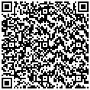

EXPERIENCIA
Pasacalles LEO
Maquetación y preparación de archivos vectoriales para cartelería y pasacalles a gran escala. Creación, digitalización y optimización de piezas gráficas vectoriales utilizando CorelDRAW y Adobe Illustrator
Diseñador/a Gráfico/a Freelance
Gestión integral y desarrollo de proyectos visuales de manera autónoma
HABILIDADES TECNOLOGICAS
Programas de diseño
-Corel Draw -Adobe Illustrator CC -Adobe Photoshop CC -Adobe Indesing -Adobe After
Paquete office
Me desempeñe en la creacion de pasacalles en Unuruay, se utilizo el progrmama corel draw e illustrator
ESTUDIOS
Universidad de Lanús(unla). Lic. en Diseño y comunicación visual. 2018 - actualmente
ADA itw. Diseño UX/UI. 2022-2023
Portafolio

Escanea para ver mi portafolio